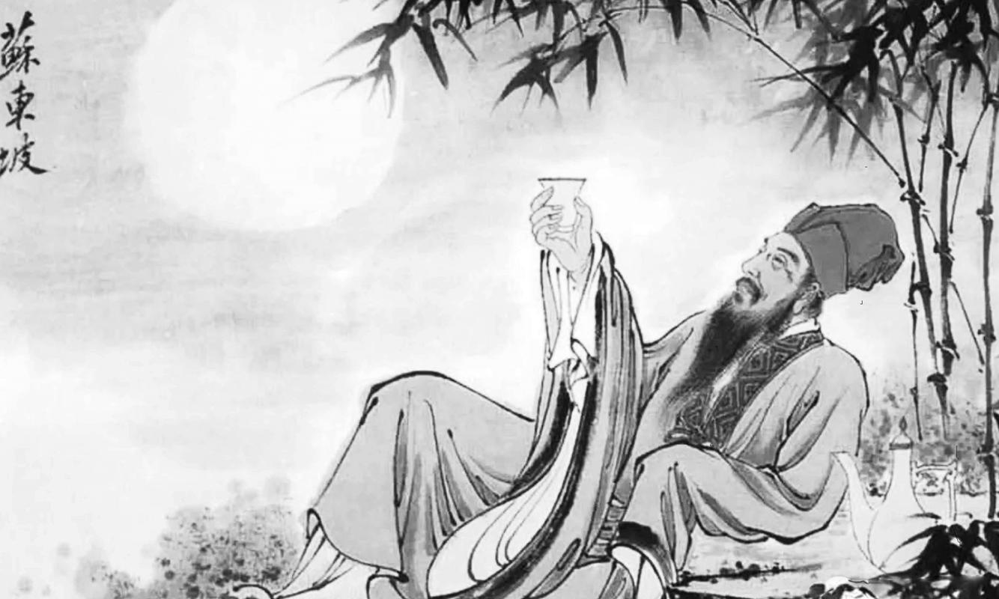

宋词简介 | 苏轼 | 辛弃疾

丙辰中秋，欢饮达旦，大醉，作此篇，兼怀子由。
明月几时有？把酒问青天。不知天上宫阙，今夕是何年。
我欲乘风归去，又恐琼楼玉宇，高处不胜寒。起舞弄清影，何似在人间。
转朱阁，低绮户，照无眠。不应有恨，何事长向别时圆？
人有悲欢离合，月有阴晴圆缺，此事古难全。但愿人长久，千里共婵娟。
大江东去，浪淘尽，千古风流人物。
故垒西边，人道是，三国周郎赤壁。
乱石穿空，惊涛拍岸，卷起千堆雪。
江山如画，一时多少豪杰。
遥想公瑾当年，小乔初嫁了，雄姿英发。
羽扇纶巾，谈笑间，樯橹灰飞烟灭。
故国神游，多情应笑我，早生华发。
人生如梦，一尊还酹江月。
© 版权所有 2259665039@qq.com